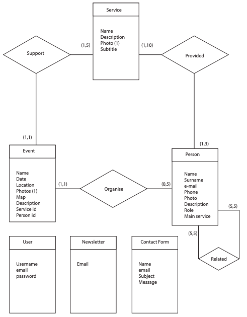

| First name | Last name | Matricola | Email address |
|---|---|---|---|
| Riccardo | Vitali | 919599 | riccardo3.vitali@mail.polimi.it |
| Andrea | Silvano | 942107 | andrea.silvano@mail.polimi.it |
| Federico | Pozzi | 942245 | federico3.pozzi@mail.polimi.it |
- Deliverable D0: the web application is accessible at https://afronlus.herokuapp.com
- Deliverable D2: the YAML or JSON file containing the specification of the app API can be found at https://afronlus.herokuapp.com/backend/spec.yaml.
- Deliverable D3: the SwaggerUI page of the same API is available at https://afronlus.herokuapp.com/backend/swaggerui
- Deliverable D4: the source code of D0 is available as a zip file at https://afronlus.herokuapp.com/backend/app.zip -----------------------DA FARE
- Deliverable D5: the address of the online source control repository is available at https://github.com/RiccardoVitali/afraina.git. We hereby declare that this is a private repository and, upon request, we will give access to the instructors.
Describe here, with a diagram, the components of your web application and how they interact. Highlight which parts belong to the application layer, data layer or presentation layer. How did you ensure that HTML is not rendered server side?
The database is the data layer, while the Application server serves as application layer. The database is the one managed through Heroku, while the Application Server is the one generated from the swaggerUI. In a basic representation:
The initial response will be large and serve the static files including all CSS, all Javascript, all HTML pages and some images, but no real content. The future requests will serve JSON with information from the database that will fill the appropriate HTML pages.
Describe here to what extent did you follow REST principles and what are the reasons for which you might have decided to diverge. Note, you must not describe the whole API here, just the design decisions.
We'll describe our approach to REST principles by targeting their main
points, explaining if and why we followed those principles.
- Uniform Interface: this is fundamental to the REST API design and we
did our best to follow this principle. Our interface is resource based
and we use HATEOAS (Hypermedia as the Engine of Application State).
- Client-Server: the client application and server application are totally
able to evolve separately without any dependency on each other.
- Stateless: we obviously could not make our application stateless, as
session management was requested. However, after a user logs in, each
request from the client contains all the information necessary to service
the request, including authentication and authorization details: we used
a light session management that is not invasive and preserves the REST API
foundamentals.
- Layered System: the system is layered, as the server is deployed in a
place other than the one where the postgres server is.
Describe here synthetically, which models you have introduced for resources.
Describe with an ER diagram the model used in the data layer of your web application. How these map to the OpenAPI data model?
The relationship between entities is the following: a person can work for several services and can organize numerous events, but each person has only one main service (each person works mainly on one service). People related to a person are those who work for the main service of the person.
Describe here which tools, languages and frameworks did you use for the backend of the application.
The backend of the application has been implemented with NodeJS, where the server framework Express has been used to created the server. We use Postgres for the data storage. We use Swagger to generate and manage the specification.
- How did you make sure your web application adheres to the provided OpenAPI specification?
We actually started from the OpenAPI specification to build the project, and during the process of building the web application, we changed and manipulated the specification in order to keep it updated and consistenr with the state of our project. We tested the operations via SwaggerUI. However, requests from newsletter, contact-form and signup are internally managed.
- Why do you think your web application adheres to common practices to partition the web application (static assets vs. application data)
We think our web application adheres to common practices to partition the web application because we have separated the static resources (html, css, js) from the data by putting them respectively on the server and on a remote database, and the data is accessed through specific calls.
- Describe synthetically why and how did you manage session state, what are the state change triggering actions (e.g., POST to login etc..).
We used cookie-session and cookie-parser for the session state.
The idea is that a user can access his own page to see how his contribution
is helping the association, he can receive letters or photo concerning distance
adoption or the progress of a specific service.
As soon as the user registers, his data is stored in the database,
and when a user logs in, a new session is generated, contening
all the information about him, in this way he can navigate the website
remaining logged in, until he logs out thus destroying that
session.
- Which technology did you use (relational or a no-SQL database) for managing the data model?
We have been using a relational database, Postgres.
Describe here how development tasks have been subdivided among members of the group
Riccardo Vitali took care of the backend implementation, while Federico Pozzi and Andrea Silvano worked on the frontend.
We were inspired by this simple and practical example:
Swagger Petstore, moreover
we explored the swagger documentation and we watched several swagger tutorials
on youtube.
Professor Zaccaria's lessons helped us a lot, providing the necessary
information to get acquainted with the OpenAPI specification.
What was the most important thing all the members have learned while developing this part of the project, what questions remained unanswered, how you will use what you've learned in your everyday life?
- Riccardo Vitali had never seen a javascript code before in his life and he
had never worked with databases or websites, so he had to learn everything
from scratch, the effort was great but,
thanks to Professor Zaccaria's lectures, the many videos on youtube and
the posts on stackoverflow, he slowly became familiar with the environment.
Additionally, he got a basic knowledge of HTML and CSS and he learnt how
to use github and a platform such as Heroku.
- Federico Pozzi comes from Design school, he had the chance to improve his coding skills, particularly css, html and javascript, becoming able to build from scratch a full website.
Moreover he got aware of the functionality of a database and SQL, by discovering how the architecture is made and how It works. He thinks that all the knowledge he learned in this course will be a solid base for his future.
- Andrea Silvano has learned the basics of Database and how to link a DB to the frontend. Currently enrolled in the Master's Degree in Communication Design thanks to Hypermedia application is now able to develop static webpages with ease and furthermore implementing some notions of basic database in the webpage. Thanks to this course he's now able to fluently work with HTML, CSS, JS and DB entries.